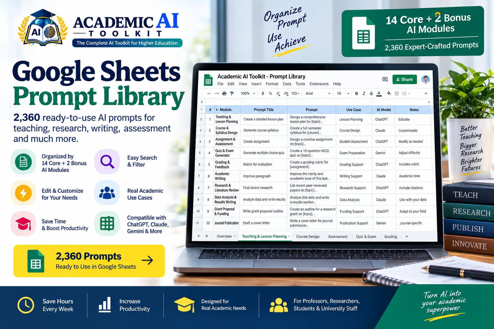
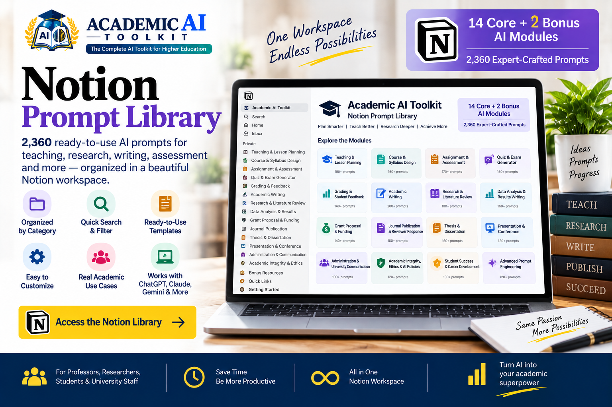
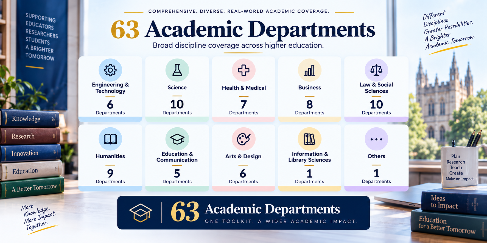

Professors & Lecturers
Prompts for lesson planning, course design, assessments and student feedback.
The Complete AI Toolkit for Higher Education
2,360 ready-to-use academic prompts, organized workflows, templates, and discipline-specific resources — built around the real work of teaching, research, writing, publishing, administration, and student success.
One-time payment · Lifetime product updates
Academic work often requires the same kind of thinking again and again — structuring tasks, defining context, specifying outputs, and refining AI responses.
Less time figuring out what to ask — more time working on the task itself
A practical system for teaching, research, writing, assessment, and academic workflows.
Start with a ready-to-use prompt, adapt it to your context, then run, review, and refine the result.
Skip the trial and error
Start with structured, ready-to-use prompts
For teaching, research, writing and administration
More time for the work that matters
Prompts designed around real teaching, research and academic tasks.
Category → Topic → Sub-Topic → Prompt. Find the right resource without starting from scratch.
Built for everyday workflows and repeatable tasks.
A searchable library designed for fast discovery.
Instead of starting every AI interaction from a blank screen, you can begin with a structured starting point designed around the type of academic work you are trying to accomplish.
Find the academic task.
Choose the relevant ready-to-use prompt.
Add your course, research, audience, discipline, requirements and variables.
Use it with your preferred AI tool.
Check facts, sources, citations, calculations and context.
Adjust the prompt or output when needed.

Explore the Academic AI Toolkit through a familiar Google Sheets interface designed for fast filtering and easy copy-and-customize workflows. The library contains 2,360 ready-to-use academic prompts, organized for easy filtering and retrieval.
Use the filters to move from a broad academic area to a focused set of prompts.
Google Sheets access is provided in your User Manual & Access Guide after purchase.
Prefer a workspace-style experience? The Notion version provides the same prompt library through structured navigation and page-based exploration.
Choose the interface that fits the way you work — Google Sheets or Notion.

Prompts for lesson planning, course design, assessments and student feedback.
Structured starting points for literature reviews, analysis write-ups, grants and publications.
Support for thesis and dissertation work, conference talks and reviewer responses.
Prompts for coursework writing, research projects and thesis preparation.
Structured prompts for study planning, writing tasks and career development.
Prompts for university communication, planning and policy-related tasks.
Help preparing sessions, drafting feedback and organizing grading work.
Resources for student success and career development conversations.
Day-to-day writing, communication and administrative tasks across campus offices.
Prompts for course structure, learning materials and assessment design.
Academic AI Toolkit includes discipline-specific coverage across 63 academic departments, spanning major areas of higher education.

14 Core AI Modules + 2 Bonus AI Modules, organized around real academic responsibilities, workflows, disciplines, and higher-education use cases.
The 14 Core + 2 Bonus AI Modules describe the broader toolkit architecture. The 15 Prompt Categories organize the prompt database. They are two different organizational layers.
Reusable starting formats for common academic documents and outputs.
Multi-step workflows that guide complete academic tasks.
Supplementary resources that extend the core toolkit.
The goal is not simply to give you more prompts — it is to give you a more structured way to use AI for academic work.
Academic AI Toolkit is designed to reduce the repetitive work that happens before the useful AI work even begins. Get more focused AI responses by giving the model clearer instructions, relevant context, and a defined output format.
Skip the blank-chat starting point.
Start with what you need to accomplish.
Use prompts built around context, task and desired output.
Adapt structured prompts for recurring academic tasks.
Give your AI tool more relevant instructions from the beginning.
Use discipline-specific coverage instead of relying only on generic prompts.
Better-Structured Prompts. Better-Defined Tasks. More Consistent Starting Points.
Helps provide a structured starting point for AI-assisted academic tasks. Actual time savings vary by task, discipline, workflow and usage.
One purchase. One structured academic AI toolkit.
The Complete AI Toolkit for Higher Education
$49 One-time paymentLifetime product updates included
Secure checkout via Gumroad Refund Policy
Organized by category, topic and sub-topic for fast retrieval.
Covering teaching, research, writing, assessment and more.
Spanning engineering, science, health, business, law and more.
A complete academic workflow system.
Ready-to-use academic templates.
From research to publication.
Extra tools to boost productivity.
Searchable, organized and easy to use.
Step-by-step instructions for easy setup.
Every future update included, at no extra cost.
Built around real higher-education workflows.
Skip the blank-screen guesswork on repeat tasks.
Move from prompt to usable output, faster.
Structured prompts mean less rework, more progress.
Every prompt, module and workflow is engineered around the real demands of higher-education work — never a repackaged, generic AI prompt pack.
The result is a sharper, more structured starting point for academic AI work — built to hold up from the first prompt you open to the last deadline you hit.
Not a generic AI toolkit with academic labels bolted on. Every prompt is structured around real faculty work — teaching, research, grants and administration — so it fits the way higher education actually operates.
2,360 ready-to-use prompts, organized by category, topic and sub-topic — so you move from a broad academic need to the exact prompt you want in seconds, not minutes of scrolling.
63 academic departments — engineering, science, health, business, law, humanities and beyond — each reflecting how that discipline actually works, not a one-size-fits-all template stretched thin.
No new tool to learn. Use a familiar Google Sheets workspace for fast filtering, or a structured Notion workspace for page-based navigation — your choice, same library.
8 templates, 7 academic workflows and 5 bonus resources turn the library into ready-made starting points for real deliverables — not just isolated lines of prompt text.
Pay once, own it for good. The toolkit keeps expanding as academic AI use evolves — every future update included, at zero extra cost to you.
A snapshot of feedback from professors, researchers and students using Academic AI Toolkit in their day-to-day work.
“Cut my lesson-planning prep time significantly. Having discipline-specific prompts already structured means I customize instead of starting from zero.”
“The Notion workspace makes it easy to find the right prompt for literature reviews and grant writing. Genuinely built for academic work, not generic tasks.”
“As a teaching assistant juggling grading and feedback, the assessment prompts alone were worth it. Clear structure, easy to adapt.”
Find quick answers to common questions about Academic AI Toolkit, access, usage and more.
Academic AI Toolkit is a structured academic AI resource designed specifically around the real work of higher education — not a random collection of generic AI prompts. It brings together 2,360 ready-to-use academic prompts organized by category, topic and sub-topic, 14 Core + 2 Bonus AI Modules, templates, workflows and bonus resources, delivered through Google Sheets and Notion.
It is designed for professors and lecturers, researchers, PhD scholars, master's and graduate students, undergraduate students, academic administrators, teaching assistants, career services professionals, higher education staff, and instructional or learning designers.
2,360 ready-to-use academic prompts.
15 prompt categories and 63 academic departments.
The modules are the broader toolkit architecture: 14 Core AI Modules covering areas such as teaching, assessment, academic writing, research, publishing, thesis work, administration and academic integrity, plus 2 Bonus AI Modules (Student Success & Career Development AI, and Advanced Prompt Engineering & AI Workflows for Academics). The 15 Prompt Categories are a separate layer: they organize the prompt database itself.
Yes. You receive access to the shared Google Sheets prompt library through the User Manual & Access Guide.
Yes. Notion access is provided individually through Guest Access after purchase.
Contact support@academicaitoolkit.com using the same email address you used for the purchase. After purchase verification, you will receive a Notion invitation.
You need to sign in to Notion using the invited email address. If you do not already have an account, you can create one using that email address.
Yes.
No. It is a one-time purchase.
Yes.
No. The toolkit is designed to reduce repetitive prompt-building work, but actual time savings vary by task, discipline and usage.
The prompts are designed to be customized and adapted for your preferred AI tool.
Email support@academicaitoolkit.com and include your order information, a description of the issue, a screenshot where useful, and whether you are using Google Sheets or Notion.
No questions in this category yet.
Do not enter confidential, personally identifiable, restricted or sensitive academic information into AI tools unless permitted by the relevant institution and system.
Follow applicable university policies relating to AI use, academic integrity, privacy, research, data handling and professional responsibilities.
Check facts, sources, citations, calculations, references, names, dates and academic claims before relying on AI-generated content.
AI should support academic work and professional judgment — not replace it.
This information is general in nature and does not constitute legal advice or replace your institution's official policies.
Have questions about your purchase, Google Sheets access, Notion Guest Access, or anything related to the Academic AI Toolkit? Our support team is here to assist you.
Stop starting every AI interaction from a blank screen. Start with a structured academic prompt library built around the work you actually do.
One-time purchase Lifetime product updates